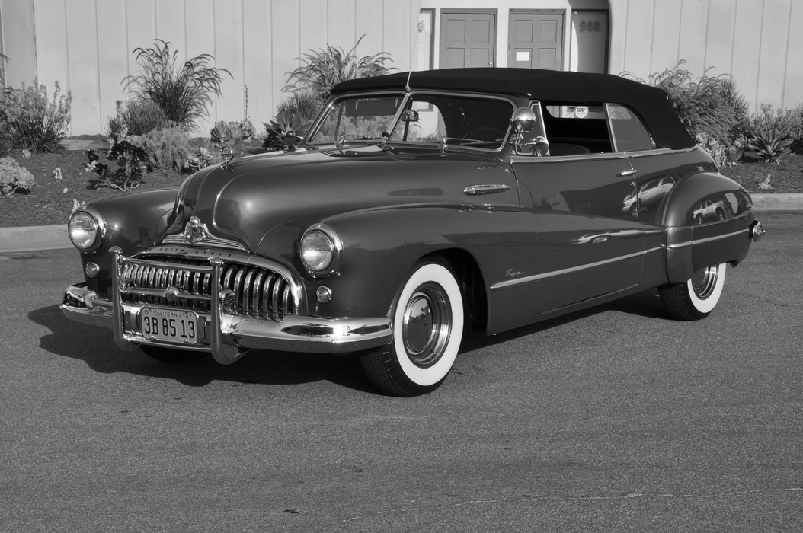

.jpg)
Ford thunderbird, Ano: 1957, Preço Estimado R$:330.000,00 / 50.000,00///Precursor dos autmóveis superesportivos norte Americanos, este modelo foi magnificamente restaurado nos padrões originais de sua época. Sua mecânica é toda nova, possui kit continental, capota rígida e uma das mais bonitas combinações de cores de sua época. Motor V8 com 200 HPs e câmbio Hidramático (ambos originais e restaurados). Esse nosso Thunder é de concurso. Único!
DKW vemaguet rio, Ano: 1968, Preço estimado R$: 50.000,00 / 60.000,00///Maravilhoso exemplar de Vemagueta na exclusiva Série Rio, que homenageou em 1965 os quatrocentos anos de fundação da cidade do Rio de Janeiro. 77.800 km originais, pintura original e em excelente estado, mecânica perfeita e com tudo em ordem, o atual proprietário é o segundo dono!
Ford Maverick "USA" Grabber, Ano: 1974, Preço estimado R$: 85.000,00 / 100.000,00///Veículo importado zero para o BR em 1974, vem com motor V8 302 e câmbio automático, (originalmente ele é 6 cilindros) totalmente restaurado e caracterizado como "Grabber". Veículo a toda prova, tanto de mecânica com de elétrica, pintura e tapeçaria.

Ford modelo T center door, Ano: 1917, Preço estimado R$: 140.000,00 / 160.000,00///Raríssimo modelo "Center Door", carroceria fechada do tipo cristaleira, com uma única porta no meio de cada lateral. Mecânica toda original, motor 4 cilindros, 2.9 com 20,2cv e câmbio semi-automático com comando pelos pés. Carro totalmente restaurado nos padrões originais,varias peças de mecânica, madeiramento e acabamento importados. Funciona perfeitamente, documentação rigorosamente em dia e placa do ano.

Buick s50 super convertible, Ano: 1947, Preço estimado R$: 480.000,00 / 550.000,00///Belo e raro exemplar da buick, "tão luxuoso como um cadillac e tão esportivo como um pontiac." Vigoros motor V8 383pol, câmbio automático "Dynaflow" de duas marchas, vidros e bancos elétricos, capota com acionamento hidráulico, direção hidráulica e um opcional raríssimo, ar condicionado de fábrica! Veículo primorosamente restaurado, serviço efetuado com muito critério e qualidade, absolutamente nada de errado ou fora dos padrões. Esse modelo tem sido cada vez mais valorizado no mercado internacional, atingindo facilmente cifras de três dígitos.
Chevrolet Master coach, Ano: 1941, Preço estimado R$: 340.000,00 / 360.000,00///Produzido a semelhança do Cord esse belo automóvel estava a frente de seu tempo, tanto em design com as belas, elegantes e fluidas linhas, como na mecânica, Com o exclusivo e potente motor 6 cilindros equipado com Supercharged. Raro, exclusivo e bastante cobiçado no mercado internacional o nosso exemplar esta em ótima forma, mantendo todas as características originais de fábrica. Peça única!